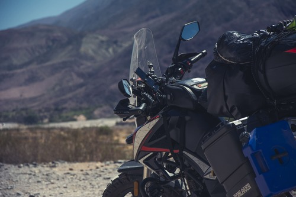

Soy Fede EME es solo el nombre que se me ocurrió ponerle a esta página en la que quiero compartir con todos ustedes mis viajes y experiencias. Mi nombre es Federico, un rosarino de 38 años que nunca deja de buscar cosas para salir del aburrimiento de la rutina de 8 horas de oficina diaria. Me gusta el ciclismo de montaña, la fotografía, la escalada deportiva y los viajes. Hace dos año atrás, la pandemia me hizo reflexionar sobre lo que nos estábamos perdiendo de vivir y la libertad que no disfrutábamos cuando todo era normal, tal vez por comodidad, tal vez por miedo. Así que dije, porqué no me compro una moto y apenas pueda me voy de viaje solo al norte de Argentina. Ese pensamiento incluía al menos dos acciones que me sacaban totalmente de mi zona de confort, viajar solo y andar en moto. Andar en moto cuando se viene de una familia en la que nadie tuvo una te transforma automáticamente en un loco. Lo que no les conté hasta ahora, es que a este loco, cuando se le pone una idea en la cabeza, no hay menera de sacársela. Así que me compré la moto, aprendí a manejar, cargué el equipaje y me fui a mi primer viaje, un viaje de 16 días y más de 4000Kms por el norte argentino. Desde ese momento caí en el vicio que muchos me habían advertido, la libertad que te da la moto, una vez que se prueba, no tiene vuelta atrás. En esta página te voy a compartir las fotos, los videos y las experiencias que vaya recolectando con el paso de los kilómetros.
